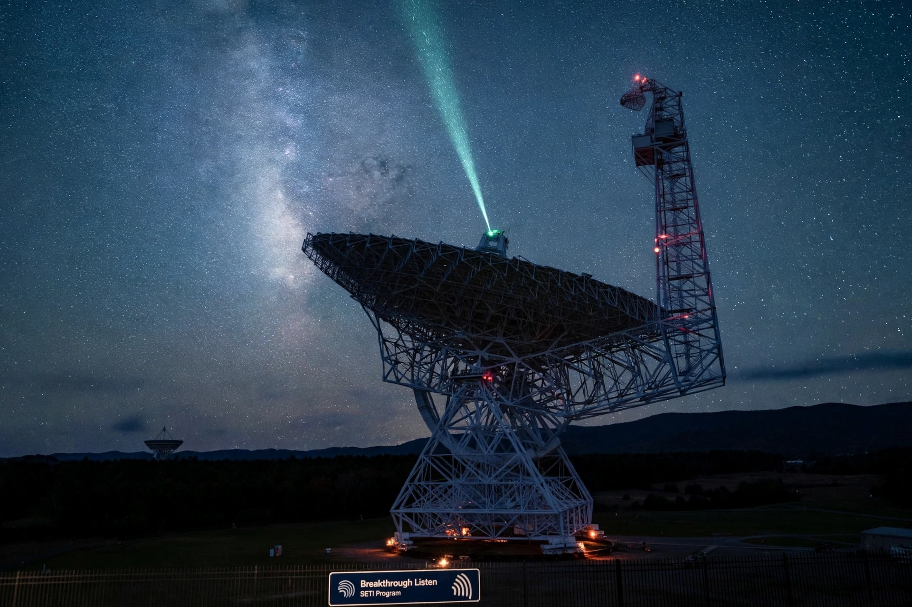

Breakthrough Listen is a $100 million initiative launched in 2015 to search for intelligent extraterrestrial communications, the most comprehensive SETI effort undertaken. It is part of Yuri Milner's Breakthrough Initiatives.

Announced at the Royal Society in London with Stephen Hawking. Uses the Green Bank Telescope (US), Parkes Telescope (Australia), Automated Planet Finder, and later MeerKAT in South Africa to survey a million nearby stars and 100 galaxies across radio and optical spectra.
Data are largely public. Candidate BLC1 (2020), a signal apparently from Proxima Centauri direction, was later attributed to human interference. No confirmed technosignature has been found. See SETI, Search for extraterrestrial intelligence.